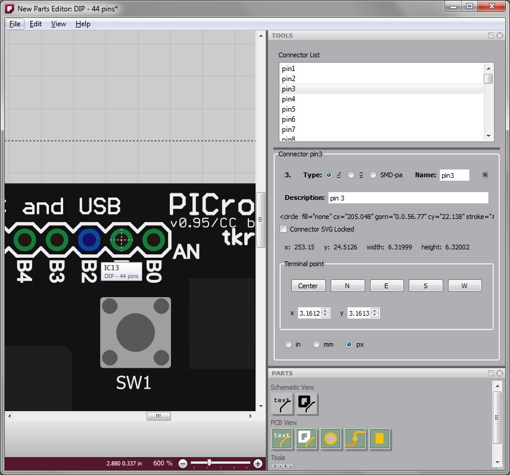
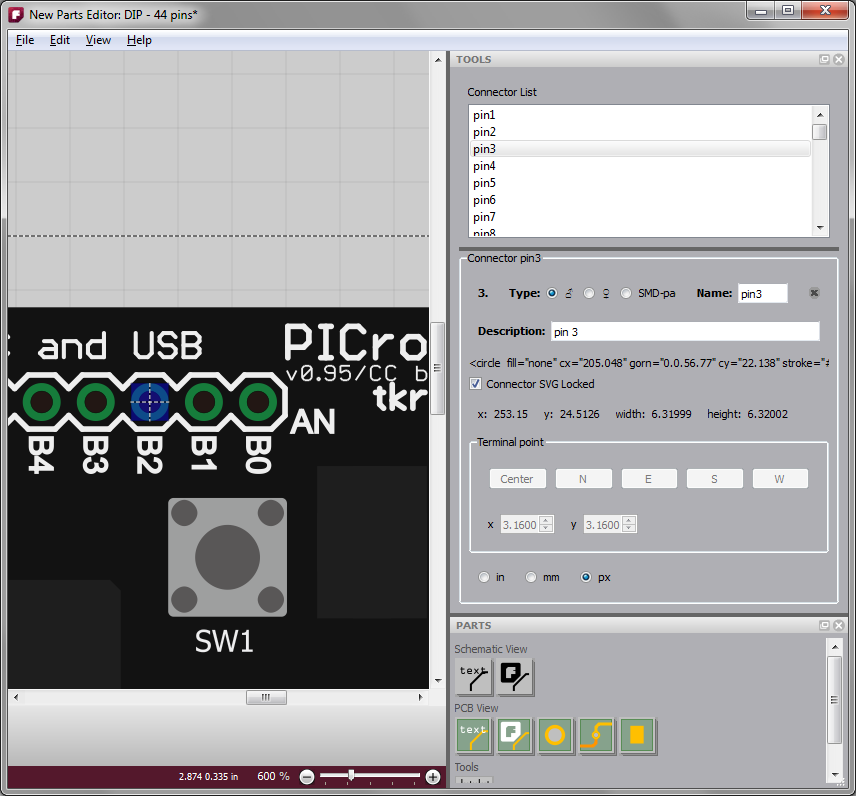
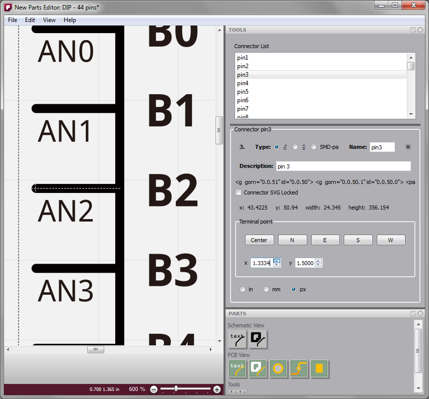

Hi Shunichi,
Yes, the new Parts Editor code is already in the trunk. It is
changing very fast right now, so you might want to update your
build every day or so to get the most recent version. If
you have already gotten the code from googlecode, make sure it's
the most recent update (rev 6246).
The new approach is very different from the old Parts Editor, so
let me try to briefly outline it here.
In the new parts editor, you must always start with an existing
part. It is best to find a part that already has the right
number of pins. I think I count 44 pins on the breadboard
drawing you sent, so you might start out by dragging a Generic
IC part from the parts bin into an empty sketch window.
Then use the Inspector to change the number of pins to 44 (or
whatever is the correct even number).
-- if the number of pins is odd, then change the Generic IC to a
SIP by using the popup under "package" in the Inspector and then
set the pin count.
Once you've got the Generic IC part ready, then open the new
Parts Editor with a right-click on the part (choose the Edit
option), or use the Edit option under the Part menu (Part
> Edit).
The new Parts Editor no longer tries to display everything in a
single view. Instead, it works like the sketch window,
where there are multiple tabs, but only one tab is visible at a
time. In the new Parts Editor there are 6 tabs: breadboard
view, schematic view, pcb view, icon view, part metadata view,
and connectors view. You can use the View menu or shortcut
keys to switch between views.
To load the four SVGs for your part, go to the appropriate view,
and use File > Open.
-- load your original SVG files, and not the ones that have come
through the old Parts Editor.
-- for PCB view, please use the attached file. If you open
up that SVG file with a text editor you can see how I
reorganized it to have separate copper and silkscreen
layers. An upcoming version of the parts editor will give
you a way to manage this directly. You may want to resize
the copper rings or change the thickness ("stroke-width")--I
would recommend using a text editor rather than Illustrator, but
either way make sure the circles remain hollow by leaving the
"fill" attribute as "none".
So now you should have 4 SVGs in 4 views.
-- I would do a Save at this point, and in general I would save
pretty often because the code is not stable.
You can go into the 5th view and add metadata and/or go into the
6th view and fill in the connector info. Note that you can
save your work at any point--unlike the old Parts Editor, the
window will stay open until you close it yourself.
-- in connectors view, do not try to delete a connector or
change the number of pins. This isn't working yet.
Next you need to associate the pins with their locations. Go to
one of the views, for example breadboard view. In the
Tools widget at the upper right, you will see a list of
connectors. Choose one. Now with the mouse navigate
over the image at the right until you are hovering over the
location of that pin. You will see an area highlighted in blue.
If the area is too big, use the mouse wheel--that will scroll
through the all the SVG shapes that lie beneath the mouse
position. When the right size rectangle show up, click it.
This means you have associated that SVG shape with that pin.
Here is an image to show what I mean:

I have selected Pin3 in the list widget at the upper right. My
mouse is hovering over B2 so it is highlighted in blue.
When I click on the highlight, that associates the blue area
with Pin3, and you see a cross-hair.

The cross-hair is the location of the "anchor point" or
"terminal point"--where a wire will actually attach to the
connector. In PCB and Breadboard view this is usually the
center of the circle so you don't have to do any thing
else. But in schematic view this is usually near the end
of the connector. To adjust the terminal point, uncheck
the "Connector SVG Lock" checkbox in the Tools widget. Now you
can use the spinners in the Tool view to adjust the terminal
point, or you can just click in the middle of the cross-hair and
drag the terminal point to where you want it to go. Here
is an example from schematic view:

Once you are happy with the terminal point location you can
check the SVG Connector Locked checkbox. This will keep
you from clicking on something you didn't mean to.
-- the undo implementation is working, so if you make an error,
you can undo it.
Buses <TBD>